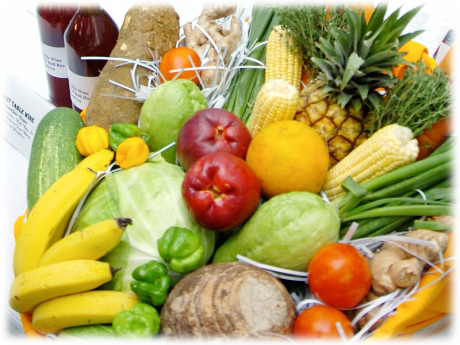

Plant Quarantine / Produce Inspection Unit
193 Old Hope Road, Kingston 6
Tel: (876)977-0637, (876)977-6401
Fax: (876)977-6992
Email: ppq@moa.gov.jm

Veterinary Services Division
193 Old Hope Road, Kingston 6
Tel: (876)977-2489, (876) 977-2492
Fax: (876)977-0885
Email: vsd@moa.gov.jm